5 Package
R packages allow the software’s functionality to be extended by code provided by the developer community. They are the key to the success of R because they allow to quickly spread new methods resulting from research or to add new tools that can become standards, like the tidyverse.
It is useful to produce a package when you have written new functions that form a coherent whole. A package for personal use or limited to a work team is simple to set up and the time saved by easily using the updated version of each function very quickly amortizes the time spent on making the package. This type of package is intended to be hosted on GitHub.
Packages with a wider use, which provide for example the code corresponding to a published method, are placed in the CRAN repository, from where they can be installed by the standard command install.packages().
CRAN performs extensive code checks and only accepts packages that pass its test suite without any warning.
They must respect the91 policy of the repository.
The documentation for package creation is abundant. The reference book is Wickham (2015), which should be consulted as a reference.
The approach used here is to create a first package very quickly to understand that the process is quite simple. It will then be enriched with the elements necessary for a package distributed to other users than its designer: a complete documentation and tests of correct operation in particular.
5.1 First package
This introduction follows the recommendations of the blog Creating a package in minutes92 from ThinkR.
5.1.1 Creation
Packages have a strict organization in a fixed file and directory structure. It is possible to create this structure manually but specialized packages can do it:
usethis automates the creation of folders; roxygen2 automates the mandatory documentation of packages; devtools is the developer’s toolbox, allowing to build and test packages;
All three are to be installed first:
install.packages(c("usethis", "roxygen2", "devtools"))The package to create will be an RStudio project.
In the project menu, select “New Project > New Directory > R package using devtools…”, choose the name of the project and its parent folder.
The package will be called multiple, in the %LOCALAPPDATA%\ProjectsR folder, following the recommendations in the section ??.
The name of the package must respect the constraints of project names: no special characters, no spaces… It must also be evocative of the purpose of the package. If the package is to be distributed, all its documentation will be written in English, including its name.
The minimal structure is created:
- a
DESCRIPTIONfile which indicates that the folder contains a package and specifies at least its name; - a
NAMESPACEfile which declares how the package intervenes in the management of the names of R objects (its content will be updated by roxygen2); - an
Rfile which contains the code of the functions offered by the package (empty at this stage).
The package can be tested right away: in the RStudio Build window, clicking on “Install and Restart” builds the package and loads it into R, after restarting the program to avoid any conflicts.
In the Packages window, multiple is now visible. It is loaded, but contains nothing.
5.1.2 First function
5.1.2.1 Files
Functions are placed in one or more .R files in the R folder.
The organization of these files is free.
For this example, a file with the name of each function will be created.
Files grouping similar functions or a single file containing all the code are possible choices.
The choice made here is the following:
- a file that will contain the code common to the whole package:
package.R; - one file common to all functions:
functions.R.
5.1.2.2 Creation
The first function, double(), is created and stored in the functions.R file:
double <- function(number) {
return(2 * number)
}At this point, the function is internal to the package and is not accessible from the working environment. To be sure, build the package (Install and Restart) and check that the function works:
double(2)The result is a vector composed of two 0’s because the called function is a homonym of the base package (see its documentation by typing ?double):
base::double(2)## [1] 0 0In order for the function in our package to be visible, it must be exported by declaring it in the NAMESPACE file.
This is the job of roxygen2 which manages the documentation of each function at the same time.
To activate it, place the cursor in the function and call the menu “Code > Insert Roxygen Skeleton”.
Comments are added before the function:
#' Title
#'
#' @param number
#'
#' @return
#' @export
#'
#' @examples
double <- function(number) {
return(2 * number)
}Comments to roxygen2 begin with #:
- the first line contains the title of the function, i.e. a very short description: its name in general;
- the next line (separated by a line break) may contain its description (see Description in the help);
- the next line (after another line break) can contain more information (Details in the help);
- the arguments of the function are described by the
@paramlines; @returndescribes the result of the function;@exportdeclares that the function is exported: it will be usable in the working environment;- examples can be added.
The documentation must be completed:
#' double
#'
#' Double value of numbers.
#'
#' Calculate the double values of numbers.
#'
#' @param number a numeric vector.
#'
#' @return A vector of the same length as `number` containing the
#' transformed values.
#' @export
#'
#' @examples
#' double(2)
#' double(1:4)
double <- function(number) {
return(2 * number)
}Don’t hesitate to use the help of existing functions to respect R standards (here: ?log):
- think that functions are normally vector:
numberis by default a vector, not a scalar; - some elements start with a capital letter and end with a dot because they are paragraphs in the help file;
- the title does not have a period;
- the description of the parameters does not start with a capital letter.
Taking into account the changes in the documentation requires calling the roxygenize() function.
In the Build window, the “More > Document” menu allows you to do this.
Then build the package (Install and Restart) and check the result by running the function and displaying its help:
double(2)
`?`(double)It is possible to automate the update of the documentation at each build of the package by the menu “Build > Configure Build Tools…”: click on “Configure” and check the box “Automatically reoxygenize when running Install and Restart”. This is an efficient choice for a small package but penalizing when the time to update the documentation increases with the complexity of the package. The package rebuild is most often used to test code changes: its speed is essential.
The documentation for roxygen2 supports the Markdown93 format.
At this stage, the package is functional: it contains a function and a beginning of documentation.
It is time to run a check of its code: in the Build window, click on “Check” or use the devtools::check() command.
The operation reoxygenates the package (updates its documentation), performs a large number of tests and returns a list of errors, warnings and notes detected.
The goal is always to have no warnings: they must be handled immediately.
For example, the following return is a warning about the non-conformity of the declared license:
> checking DESCRIPTION meta-information ... WARNING
Non-standard license specification:
`use_gpl3_license()`
Standardizable: FALSE
0 errors v | 1 warning x | 0 notes v
Erreur : R CMD check found WARNINGsTo correct it, update, run the update license command, starting with your name:
options(usethis.full_name = "Eric Marcon")
usethis::use_gpl3_license()The list of valid licenses is provided by R94.
After correction, run the tests again until the alerts disappear.
5.1.3 Source control
It is time to put the code under source control.
Enable source control in the project options (figure 3.2). Restart RStudio on demand.
Create a repository on GitHub and push the local repository to it, as explained in the chapter 3.
Create the file README.md:
# multiple
An R package to compute mutiple of numbers.The development of the package is punctuated by many commits at each modification and a push at each step, validated by a version number increment.
5.1.4 package.R
The package.R file is intended to receive the R code and especially the comments for roxygen2 which concern the whole package.
The first comment block will produce the package help (?multiple).
#' multiple-package
#'
#' Multiples of numbers
#'
#' This package allows simple computation of multiples
#' of numbers, including fast algorithms for integers.
#'
#' @name multiple
#' @docType package
NULLIts organization is identical to that of the function documentations, with two particular declarations for the package name and the documentation type.
The NULL code after the comments tells roxygen2 that there is no related R code.
The documentation is updated by the roxygen2::roxygenise() command.
After rebuilding the package, check that the help has appeared: ?multiple.
5.2 Package organization
5.2.1 DESCRIPTION file
The file must be completed:
Package: multiple
Title: Calculate multiples of numbers
Version: 0.0.0.9000
Authors@R:
person(given = "Eric",
family = "Marcon",
role = c("aut", "cre"),
email = "e.marcon@free.fr",
comment = c(ORCID = "0000-0002-5249-321X"))
Description: This package allows simple computation
of multiples of numbers, including fast algorithms
for integers.
License: GPL-3
Encoding: UTF-8
LazyData: true
Roxygen: list(markdown = TRUE)
RoxygenNote: 7.1.1The package name is fixed and must not be changed.
Its title must describe in one line what it is used for. The title is displayed in the Packages window next to the package names.
The version must respect the conventions:
- The first number is the major version, 0 as long as the package is not stable then 1. The major version only changes if the package is no longer compatible with its previous versions, which forces users to modify their code.
- The second is the minor version, incremented when new features are added.
- The third is the correction version: 0 at the origin, incremented at each code correction without new functionality.
- The fourth is reserved for development, and starts at 9000. It is incremented with each unstable version and disappears when a new stable version (release) is produced.
Example: a bug fix on version 1.3.0 produces version 1.3.1. The following development versions (unstable, not intended for production use) are 1.3.1.9000 then 1.3.1.9001, etc. The version number must be updated each time the package is pushed on GitHub. When the development is stabilized, the new version, intended to be used in production, is 1.3.2 if it does not bring any new functionality or 1.4.0 in the opposite case.
The description of the authors is rather heavy but simple to understand.
The Orcid identifiers of the academic authors can be used.
If the package has several authors, they are placed in a c() function: c(person(...), person()) for two authors.
In this case, the role of each must be specified:
- “cre” for the creator of the package
- “aut” for one of the other authors
- “ctb” for a contributor, who may have reported a bug or provided some code.
The description of the package in one paragraph allows to give more information.
The license specifies how the package can be used and modified. GPL-3 is a good default, but other choices are possible95.
The LazyData option means that the example data provided with the package can be used without calling it first by the data() function: this is the current standard.
Finally, the last two lines are handled by roxygen2.
5.2.2 NEWS.md file
The NEWS.md file contains the history of the package.
New versions are added to the top of the file.
Create a first version of the file:
# multiple 0.0.0.9000
## New features
* Initial version of the packageThe first level titles must contain the package name and version. Level 2 titles are free, but usually contain headings like “New features” and “Bug Fixes”.
To avoid multiplying the versions described, it is advisable to change the current version and complete the documentation until the correction version changes (third number). Then, the entry corresponding to this version remains frozen and a new entry is added.
5.3 Vignette
A vignette is essential to document the package correctly:
usethis::use_vignette("multiple")The file multiple.Rmd is created in the thumbnail folder.
Add a subtitle in its header: the short description of the package:
title: "multiple"
subtitle: "Multiples of numbers"The rest of the header allows R to build the thumbnail from R Markdown code.
The body of the thumbnail contains by default R code to declare the options for presenting the code snippets and loading the package. An introduction to the use of the package should be written in this document, in R Markdown.
During the development of the package, the thumbnail can be built manually by running:
devtools::build_vignettes("multiple")The resulting files are placed in doc/: open the .html file to check the result.
RStudio does not create the package thumbnail when the “Install and Restart” command in the Build window is called. For a complete installation, two solutions are possible:
- Build the package source file (“Build > More > Build Source Package”) and then install it (“Packages > Install > Install from > Package Archive file”). The source file is next to the project file.
- Push the package code on GitHub and then run:
remotes::install_github("multiple", build_vignettes = TRUE)The vignette can then be displayed by the command:
vignette("multiple")5.4 pkgdown
The pkgdown package creates a companion site to the package96, which includes the README.md file as the home page, the thumbnail in a “Get Started” section, all of the help files with their executed examples (the “Reference” section), the NEWS.md file for a history of the package (the “Changelog” section), and information from the DESCRIPTION file.
Create the site with usethis:
usethis::use_pkgdown()Then build the site. This command will be executed again at each version change of the package:
pkgdown::build_site()The site is placed in the docs folder.
Open the file index.htm with a web browser to view it.
As soon as the project is pushed to GitHub, activate the repository pages so that the site is visible online (see section 3.7).
pkgdown places the site in the docs folder.
Add the address of the GitHub pages to a new line in the DESCRIPTION file:
URL: https://GitHubID.github.io/multipleAlso add it to the _pkgdown.yml file that was created empty, along with the following option:
url: https://GitHubID.github.io/multiple
development:
mode: autopkgdown places the site in the docs/dev folder if the site for a stable (three-numbered) version of the package exists in docs and the current version is a development version (four-numbered).
This way, users of a production version of the package have access to the site without it being disturbed by the development versions.
The site can be enriched in several ways:
- By adding articles in R Markdown format to the
thumbnails/articlesfolder. The thumbnail does not require significant computational resources to present examples because it is built at the same time as the package. The articles are generated by pkgdown, independently, and can therefore be more ambitious; - By improving its presentation (grouping functions by themes, adding badges, a sticker97…): refer to the thumbnail of pkgdown.
To enrich the documentation of the package, it is possible to use a README.Rmd file in R Markdown format, to be knitted to create the standard README.md of GitHub, used as the home page of the pkgdown site, which can in this way present examples of use of the code.
The approach is detailed in R Packages98.
The added complexity is to be compared to the gain: a simple homepage (without code) with links to the thumbnail and articles is easier to implement.
5.5 Package specific code
5.5.1 Importing functions
Let’s create a new function in functions.R that adds random noise to the double value:
fuzzydouble <- function(number, sd = 1) {
return(2 * number + rnorm(length(number), 0, sd))
}
The noise is drawn in a centered normal distribution of standard deviation sd and added to the calculated value.
rnorm() is a function of the stats package.
Even if the package is systematically loaded by R, the package to which the function belongs must be declared: the only exceptions are functions from the base package.
The stats package must first be declared in DESCRIPTION which contains an Imports: statement.
All packages used by the multiple code will be listed, separated by commas.
Imports: statsThis “import” simply means that the stats package must be loaded, but not necessarily attached (see section `(ref?)(sec:environnements)), for multiple to work.
Then, the rnorm() function must be found in the multiple package environment.
There are several ways to fulfill this requirement.
First, the following comment could be provided for roxygen2:
#' @import statsThe entire namespace of the stats package would be attached to and accessible by the multiple package.
This is not a good practice because it multiplies the risks of name conflicts (see section 2.2).
Note that the notion of import used here is different from that of DESCRIPTION, although they have the same name.
It is best to import only the rnorm() function by declaring it in the function documentation:
#' @importFrom stats rnormThis is not an ideal practice either because the origin of the function would not be clear in the package code.
The best practice is to import nothing (in the sense of roxygen2) and to systematically qualify functions from other packages with the syntax package::function().
This is the solution chosen here because the @importFrom directive would import the function in the whole multiple package, not only in the fuzzydouble() function, at the risk of creating side effects (modifying the behavior of another function of the package which would not assume the import of rnorm()).
Finally, the code of the function is as follows:
#' fuzzydouble
#'
#' Double value of numbers with an error
#'
#' Calculate the double values of numbers
#' and add a random error to the result.
#'
#' @param number a numeric vector.
#' @param sd the standard deviation of the Gaussian error added.
#'
#' @return A vector of the same length as `number`
#' containing the transformed values.
#' @export
#'
#' @examples
#' fuzzydouble(2)
#' fuzzydouble(1:4)
fuzzydouble <- function(number, sd = 1) {
return(2 * number + stats::rnorm(length(number), 0, sd))
}5.5.2 S3 methods
S3 methods are presented in section 2.1.2.
5.5.2.1 Classes
Objects belong to classes:
# Class of a number
class(2)## [1] "numeric"# Class of a function
class(sum)## [1] "function"In addition to the basic classes, developers can create others.
5.5.2.2 Methods
The point of creating new classes is to adapt existing methods to them, the most common case being plot().
This is a generic method, i.e. a function template, without code, to be adapted to the class of object to be processed.
plot## function (x, y, ...)
## UseMethod("plot")
## <bytecode: 0x7ff5a84afc50>
## <environment: namespace:base>There are many variations of plot in R, which are functions with names of the form plot.class().
Stats provides a function plot.lm() to create a figure from a linear model.
Many packages create classes tailored to their objects and provide a plot method for each class.
The functions can be listed:
# Some functions plot()
head(methods(plot))## [1] "plot,ANY-method" "plot,color-method"
## [3] "plot.AccumCurve" "plot.acf"
## [5] "plot.ACF" "plot.addvar"# Total number
length(methods(plot))## [1] 150Conversely, the available methods for a class can be displayed:
methods(class = "lm")## [1] add1 alias anova
## [4] as_flextable case.names coerce
## [7] confint cooks.distance deviance
## [10] dfbeta dfbetas drop1
## [13] dummy.coef effects extractAIC
## [16] family formula fortify
## [19] hatvalues influence initialize
## [22] kappa labels logLik
## [25] model.frame model.matrix nobs
## [28] plot predict print
## [31] proj qqnorm qr
## [34] residuals response rstandard
## [37] rstudent show simulate
## [40] slotsFromS3 summary variable.names
## [43] vcov
## see '?methods' for accessing help and source codeThe print method is used to display any object (it is implicit when only the name of an object is entered):
my_lm <- lm(dist ~ speed, data = cars)
# Equivalent de '> my_lm'
print(my_lm)##
## Call:
## lm(formula = dist ~ speed, data = cars)
##
## Coefficients:
## (Intercept) speed
## -17.579 3.932The summary method displays a readable summary of the object:
summary(my_lm)##
## Call:
## lm(formula = dist ~ speed, data = cars)
##
## Residuals:
## Min 1Q Median 3Q Max
## -29.069 -9.525 -2.272 9.215 43.201
##
## Coefficients:
## Estimate Std. Error t value Pr(>|t|)
## (Intercept) -17.5791 6.7584 -2.601 0.0123 *
## speed 3.9324 0.4155 9.464 1.49e-12 ***
## ---
## Signif. codes:
## 0 '***' 0.001 '**' 0.01 '*' 0.05 '.' 0.1 ' ' 1
##
## Residual standard error: 15.38 on 48 degrees of freedom
## Multiple R-squared: 0.6511, Adjusted R-squared: 0.6438
## F-statistic: 89.57 on 1 and 48 DF, p-value: 1.49e-12The other methods have been created specifically for the needs of the stats package.
5.5.2.3 Assigning an object to a class
In order for an object to belong to a class, it is sufficient to declare it:
x <- 1
class(x) <- "MyClass"
class(x)## [1] "MyClass"A more elegant way to do this is to add the new class to the set of classes to which the object already belongs:
y <- 1
class(y) <- c("MyClass", class(y))
class(y)## [1] "MyClass" "numeric"There is no consistency check between the real structure of the object and a structure of the class that would be declared elsewhere: the developer must make sure that the methods will find the right data in the objects that declare to belong to it. If not, errors will occur:
class(y) <- "lm"
tryCatch(print(y), error = function(e) print(e))## <simpleError in x$call: $ operator is invalid for atomic vectors>5.5.3 In practice
5.5.3.1 Creating a generic method
New generic methods can be created and declined according to the classes.
As an example, let’s create a generic method triple which will calculate the triple of the values in the package multiple, declined in two distinct functions: one for integers and one for reals.
Calculations on integers are faster than those on reals, which justifies the effort of writing two versions of the code.
# Méthode générique
triple <- function(x, ...) {
UseMethod("triple")
}The generic method contains no code beyond its declaration.
Its signature (i.e., the set of arguments) is important because functions derived from this method will necessarily have to have the same arguments in the same order and can only add additional arguments before ... (which is mandatory).
As the nature of the first argument will depend on the class of each object, it is usual to call it x.
The method is declined in two functions:
triple.integer<- function (x, ...){
return(x * 3L)
}
triple.numeric<- function (x, ...){
return(x * 3.0)
}In its integer version, x is multiplied by 3L, the suffix L meaning that 3 should be understood as an integer.
In its real version, 3 can be written 3.0 to make it clear that it is a real.
Under R, 3 without further specification is understood as a real.
The choice of function depends on the class of the object passed as argument.
# Integer argument
class(2L)## [1] "integer"# Integer result by the function triple.integer
class(triple(2L))## [1] "integer"# Real argument
class(2)## [1] "numeric"# Real result by the function triple.numeric
class(triple(2))## [1] "numeric"# Performance
microbenchmark::microbenchmark(triple.integer(2L), triple.numeric(2),
triple(2L))## Unit: nanoseconds
## expr min lq mean median uq
## triple.integer(2L) 329 338 23351.40 344 357.5
## triple.numeric(2) 324 337 20170.68 346 358.5
## triple(2L) 1352 1368 1460.46 1385 1426.0
## max neval
## 2299586 100
## 1980541 100
## 6181 100The performance measurement by the microbenchmark package shows no difference between the functions triple.integer() and triple.numeric as expected because the time spent on the computation itself is negligible compared to the time spent calling the function.
The generic method consumes much more time than the very simple calculations here.
R indeed tests the existence of functions corresponding to the class of the object passed as argument to the generic methods.
As an object can belong to several classes, it searches for a function adapted to the first class, then to the following classes successively.
This search takes a lot of time and justifies the use of generic methods for the readability of the code rather than for performance: the interest of generic methods is to provide the user of the code with a single function for a given objective (plot to make a figure) whatever the data to be processed.
5.5.3.2 Creating a class
In a package, classes are created if the results of the functions justify it: list structure and identification of the class with an object (“lm” is the class of linear models).
For each class created, the print, summary and plot methods (if a graphical representation is possible) must be written.
Let’s write a function multiple() whose result will be an object of a new class, multiple, which will be a list storing the values to multiply, the multiplier and the result.
multiple <- function(number, times = 1) {
# Calculate the multiples
y <- number * times
# Save in a list
result <- list(x = number, y = y, times = times)
# Set the class
class(result) <- c("multiple", class(result))
return(result)
}
# Classe du résultat
my_multiple <- multiple(1:3, 2)
class(my_multiple)## [1] "multiple" "list"The call to the multiple() function returns an object of class multiple, which is also of class list'. In the absence of aprint.multiple()function, R looks for theprint.list()function, which does not exist, and falls back on theprint.default()` function:
my_multiple## $x
## [1] 1 2 3
##
## $y
## [1] 2 4 6
##
## $times
## [1] 2
##
## attr(,"class")
## [1] "multiple" "list"The print.multiple function must therefore be written for a readable display, limited to the result:
print.multiple <- function(x, ...) {
print.default(x$y)
}
# Nouvel affichage
my_multiple## [1] 2 4 6Details can be presented in the summary function:
summary.multiple <- function(object, ...) {
print.default(object$x)
cat("multiplied by", object$times, "is:\n")
print.default(object$y)
}
# New display
summary(my_multiple)## [1] 1 2 3
## multiplied by 2 is:
## [1] 2 4 6Finally, a plot function and an autoplot function complete the set:
plot.multiple <- function(x, y, ...) {
plot.default(y=x$y, x=x$x, type = "p",
main = paste("Multiplication by", x$times), ...)
}
autoplot.multiple <- function(object, ...) {
data.frame(x = object$x, y = object$y) %>%
ggplot2::ggplot() +
ggplot2::geom_point(ggplot2::aes(x = .data$x, y = .data$y)) +
ggplot2::labs(title = paste("Multiplication by",
object$times))
}
plot(my_multiple)
autoplot(my_multiple)
For technical reasons related to unconventional evaluation in the tidyverse, variable names used by aes() must be prefixed with .data$ in packages and rlang::.data must be imported.
Otherwise, the package check returns a note that the variables x and y, used by the arguments to aes() have not been declared and may not exist in the local environment (see section 2.2).
5.5.3.3 Documentation
Generic methods and functions that declare them must be documented like any other function.
Namespace management is a bit more complex:
- Generic methods must be exported:
#' @export- Functions derived from generic methods should not be exported but declared as methods, with the name of the generic method and the processed class.
roxygen2 requires that an export directive be added but does not enforce it (as it should) in the
NAMESPACEfile that is used by R:
#' @method plot multiple
#' @exportSince version 3 of roxygen2, the declaration
@methodis useless as long as the function name is unambiguously decomposable, likeplot.multiple:@exportis sufficient. If the derived function name has multiple dots, roxygen2 may not automatically detect the generic and the object and@methodmust be maintained.Functions derived from generic methods from another package need to import the generic method, unless it is provided by base (
printis provided by base and is therefore not affected):
#' @importFrom graphics plot
#' @importFrom ggplot2 autoplot- The generics imported in this way must be re-exported by a directive to be placed for example just after the code of the derived function:
#' @export
graphics::plot
#' @export
ggplot2::autoplot- roxygen2** automatically creates a help file
reexports.Rdin which there is a link to the original documentation of the re-exported generics.
In DESCRIPTION, the original package for each generic must be listed in the Imports: directive:
Imports: ggplot2, graphicsFinally, importing functions from the tidyverse also requires some precautions:
- the tidyverse package is reserved for interactive use in R: there is no way to import it into
DESCRIPTIONbecause its dependencies may change and lead to unpredictable results. The magrittr package provides the pipes, mainly%>%. The rlang package provides the.dataobject shown below. They must be imported intoDESCRIPTION.
Imports: magrittr, rlang, stats- Since it is not possible to prefix the
%>%with the package name, the function must be imported using the delimiters provided for functions whose names contain special characters:
#' @importFrom magrittr `%>%`- Functions in the tidyverse that use column names from tibbles or dataframes generate warnings at package check time because these names are confused with undefined variable names.
To avoid this confusion, the
.dataobject of the rlang package is used (for example inaes()seen above). It must be imported:
#' @importFrom rlang .dataFinally, the complete code is as follows:
#' Multiplication of a numeric vector
#'
#' @param number a numeric vector
#' @param times a number to multiply
#'
#' @return an object of class `multiple`
#' @export
#'
#' @examples
#' multiple(1:2,3)
multiple <- function(number, times = 1) {
# Calculate the multiples
y <- number * times
# Save in a list
result <- list(x = number, y = y, times = times)
# Set the class
class(result) <- c("multiple", class(result))
return(result)
}
#' Print objects of class multiple
#'
#' @param x an object of class `multiple`.
#' @param ... further arguments passed to the generic method.
#'
#' @export
#'
#' @examples
#' print(multiple(2,3))
print.multiple <- function(x, ...) {
print.default(x$y)
}
#' Summarize objects of class multiple
#'
#' @param object an object of class `multiple`.
#' @param ... further arguments passed to the generic method.
#'
#' @export
#'
#' @examples
#' summary(multiple(2,3))
summary.multiple <- function(object, ...) {
print.default(object$x)
cat("multiplied by", object$times, "is:\n")
print.default(object$y)
}
#' Plot objects of class multiple
#'
#' @param x a vector of numbers
#' @param y a vector of multiplied numbers
#' @param ... further arguments passed to the generic method.
#'
#' @importFrom graphics plot
#' @export
#'
#' @examples
#' plot(multiple(2,3))
plot.multiple <- function(x, y, ...) {
plot.default(y=x$y, x=x$x, type = "p",
main = paste("Multiplication by", x$times), ...)
}
#' @export
graphics::plot## function (x, y, ...)
## UseMethod("plot")
## <bytecode: 0x7ff5a84afc50>
## <environment: namespace:base>#' autoplot
#'
#' ggplot of the `multiple` objects.
#'
#' @param object an object of class `multiple`.
#' @param ... ignored.
#'
#' @return a `ggplot` object
#' @importFrom ggplot2 autoplot
#' @importFrom magrittr `%>%`
#' @importFrom rlang .data
#' @export
#'
#' @examples
#' autoplot(multiple(2,3))
autoplot.multiple <- function(object, ...) {
data.frame(x = object$x, y = object$y) %>%
ggplot2::ggplot() +
ggplot2::geom_point(ggplot2::aes(x = .data$x, y = .data$y)) +
ggplot2::labs(title = paste("Multiplication by",
object$times))
}
#' @export
ggplot2::autoplot## function (object, ...)
## {
## UseMethod("autoplot")
## }
## <bytecode: 0x7ff5a69c6010>
## <environment: namespace:ggplot2>5.5.4 C++ code
The use of C++ code has been seen in section 2.5. To integrate these functions in a package, the following rules must be respected:
- the
.cppfiles containing the code are placed in the/srcfolder of the project; - the code is commented for roxygen2 in the same way as for R functions, but with the C language comment marker:
#include <Rcpp.h>
using namespace Rcpp;
//' timesTwo
//'
//' Calculates the double of a value.
//'
//' @param x A numeric vector.
//' @export
// [[Rcpp::export]]
NumericVector timesTwo(NumericVector x) {
return x * 2;
}- in
DESCRIPTION, import the packages. Rcpp, and RcppParallel if parallelized code is used (delete its references otherwise), must be declared inLinkingTo:
Imports: Rcpp, RcppParallel
LinkingTo: Rcpp, RcppParallel- comments for roxygen2 should be added to
package.R(“multiple” is the package name):
#' @importFrom Rcpp sourceCpp
#' @importFrom RcppParallel RcppParallelLibs
#' @useDynLib multiple, .registration = TRUE- C++ working files are excluded from source control in
.gitignore:
# C binaries
src/*.o
src/*.so
src/*.dllThese changes are partly done automatically, for Rcpp only, by usethis, but manual insertion of the code is faster and more reliable: do not use this command.
# usethis::use_rcpp()Building the package will lead to compiling the code: Rtools are therefore essential.
5.5.5 Tidy package
Any modern package must be tidyverse compatible, which requires little effort:
- to allow pipelines, the main argument of functions must be the first one;
- functions that transform data must accept a dataframe or tibble as the first argument and return an object of the same format;
- methods
plot()must be doubled with methodsautoplot()with the same arguments that produce the same graph with ggplot2.
5.6 Bibliography
The documentation of a package uses bibliographic references. They can be managed automatically with Rdpack and roxygen2. References used in R Markdown files (thumbnail, site produced by pkgdown) are not concerned.
5.6.1 Preparation
Bibliographic references must be placed in a bibtex file REFERENCES.bib placed in the inst folder.
This folder contains files that will be placed in the root of the package folder when it is installed.
Add the following line to DESCRIPTION:
RdMacros: RdpackAlso add the package Rdpack to the list of imported packages:
Imports: magrittr, stats, Rcpp, RdpackFinally, import the reprompt() function from Rdpack by adding the following lines to the documentation for roxygen2 in package.R:
#' @importFrom Rdpack reprompt5.6.2 Citations
References are cited by the command \insertCite{key}{package} in the documentation for roxygen2.
packageis the name of the package in which theREFERENCES.bib` file is to be searched: this will normally be the current package, but references to other packages are accessible, provided only that they use Rdpack.
keyis the identifier of the reference in the file. The following example[^507] is from the documentation of the **SpatDiv** package hosted on GitHub, in its.R` file:
#' SpatDiv
#'
#' Spatially Explicit Measures of Diversity
#'
#' This package extends the **entropart** package
#' \insertCite{Marcon2014c}{SpatDiv}.
#' It provides spatially explicit measures of
#' diversity such as the mixing index.The cited reference is in inst/REFERENCES.bib:
@Article{Marcon2014c,
author = {Marcon, Eric and Herault, Bruno},
title = {entropart, an R Package to Partition
Diversity},
journal = {Journal of Statistical Software},
year = {2015},
volume = {67},
number = {8},
pages = {1--26},
}Citations are enclosed in parentheses.
To place the author’s name outside the parenthesis, add the statement ;textual:
\insertCite{Marcon2014c;textual}{SpatDiv}To quote several references (necessarily from the same package), separate them with commas.
At the end of the documentation of an object using quotes, systematically add a list of references:
#' @references
#' \insertAllCited{}5.7 Data
Data can be embedded in a package, especially for the clarity of the examples.
The simplest method is to use usethis. Create variables containing the data to be saved and then save them:
seq1_10 <- 1:10
seq1_100 <- 1:100
usethis::use_data(seq1_10, seq1_100)An .rda file is created in the data folder for each variable created.
With the LazyData option enabled in DESCRIPTION, variables will be available as soon as the package is loaded, but will not actually be loaded into memory until after they are used for the first time.
Each variable must be documented in the package.R file:
#' seq1_10
#'
#' A sequence of numbers from 1 to 10
#'
#' @format A numeric vector.
#' @source Values computed by the R software,
#' \url{https://www.r-project.org/}
"seq1_10"The name of the variable is given in quotes after the comment block (instead of the R code of a function).
@format describes the format of the data and @source is used to indicate its source.
5.8 Unit tests
Ideally, all code included in a package should be tested in multiple ways:
- against syntax errors: R’s checking procedures handle this quite well;
- to check the conformity of the computation results to the expected values;
- against the occurrence of errors if users do not use the code as the developer intended (incorrect arguments passed to functions, inadequate data…).
Unit tests are used for the last two objectives. They are based on testthat to be integrated in the package:
usethis::use_testthat()##
## Attaching package: 'testthat'## The following object is masked from 'package:targets':
##
## matches## The following object is masked from 'package:dplyr':
##
## matches## The following object is masked from 'package:purrr':
##
## is_null## The following objects are masked from 'package:readr':
##
## edition_get, local_edition## The following object is masked from 'package:tidyr':
##
## matchesThe tests must be added as .R' files whose names must begin withtest’ in the `tests/testthat’ folder.
Each test (so the content of each file) starts with its context, i.e. a set of tests. For example, in a file test_double.R:
context("function double")The tests are contained in files that group them by topic, for example test_double.R.
The name of each test is passed as an argument to the function test_that()):
test_that("Double values are correct", {
skip_on_cran()
x <- 1:2
# 2 x 2 should be 4
expect_equal(double(x), c(2, 4))
# The result should be a number (type = 'double')
expect_type(double(x), "double")
# Error management
expect_error(double("a"))
})## Test passed 🎊All functions starting with expect allow to compare their first argument to a result: in the above example, the result of double(1:2) must be 2 4 and the type of this vector must be double precision real.
The last test checks whether a string passed as an argument generates an error, which is not optimal: if the package handled the error, the returned message could be tested.
The skip_on_cran() command, to be used systematically, avoids running the tests on CRAN when the package is dropped there: CRAN has limited resources and strictly limits the time for checking packages on its platform.
The tests will therefore have to be run on GitHub, thanks to continuous integration, see section 5.10.
The tests can be launched by the “More > Test package” menu of the Build window or by the devtools::test() command.
It is advisable to write the tests as soon as a function of the package is stabilized.
5.9 .gitignore file
The .gitignore file obtained at this stage is incomplete.
It can be replaced by this one:
# History files
.Rhistory
.Rapp.history
# Session Data files
.RData
# Example code in package build process
*-Ex.R
# Output files from R CMD build
/*.tar.gz
# Output files from R CMD check
/*.Rcheck/
# RStudio files
.Rproj.user/
.Rprofile
# knitr and R markdown default cache directories
*_cache/
/cache/
# Temporary files created by R markdown
*.utf8.md
*.knit.md
# C binaries
src/*.o
src/*.so
src/*.dll
/src-i386/
/src-x64/
# uncomment if pkgdown is run by CI
# docs/The last line is for the docs/ folder, which receives the web site produced by pkgdown.
It is commented out as long as the production of the site is done locally, but uncommented if it is entrusted to GitHub Actions (see next section).
5.10 Continuous integration
A package check must be done at each step of the development, which consumes a considerable amount of time. It can be automated very easily with the GitHub Actions service, triggered at each modification of the repository on GitHub. The analysis of the code coverage by tests (which parts of the code are tested or not) will be added.
GitHub is also able to rebuild the package documentation with pkgdown, another resource-consuming operation, after the tests have passed.
The section 6.3.5 details how to do this.
5.11 CRAN
Packages with an audience beyond the author’s circle can be uploaded to CRAN.
The rules to respect on CRAN are numerous99. They are checked by the R CMD check command with the -- as.cran option.
The check must not return any errors, warnings, or notes before submitting the package.
5.11.1 Testing the package
Verification of the package by GitHub as part of continuous integration is not sufficient. The package must be tested on the development version of R. The R-hub builder100 site allows to do it easily.
The package, which must not be a development version (limited to three numbers, see section 5.2.1), must be built in source format: in the Build window of RStudio, click on “More > Build Source Package”. On the R-hub builder site, click on “Advanced”, select the package source file and the test platform: Debian Linux, R-devel, GCC.
The rhub package allows you to use the same verification platform as the R-hub builder site from RStudio.
The first step is to validate your email address with the validate_email() command.
Then, just call the check_for_cran() function to run a full verification.
5.11.2 Submission
When the package is ready, submission to CRAN is done through the dedicated web site101.
In case of rejection, process the requests and resubmit by incrementing the version number.
5.11.3 Maintenance
Requests for corrections are sent by CRAN from time to time, especially when the version of R changes. The email address of the package maintainer must remain valid and the requests must be processed quickly. Otherwise, the package is archived.
New versions of the package are submitted in the same way as the first one.
References
https://svn.r-project.org/R/trunk/share/licenses/license.db↩︎
L’application Shiny hexmake permet de créer facilement un sticker: https://connect.thinkr.fr/hexmake/↩︎